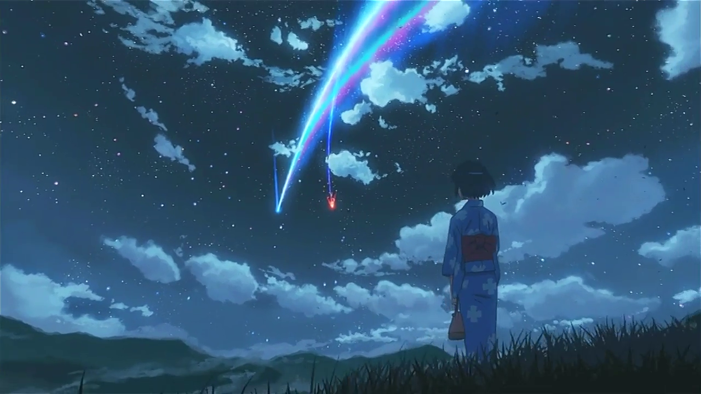

Мною просмотренные аниме-фильмы:

Тетрадь Смерти
Популярное японское аниме, созданное по манге Цугуми Обы и Такеси Обы. Сюжет фокусируется на моральных и этических дилеммах, с которыми сталкивается Лайт, когда он решает использовать тетрадь для установления своей версии справедливости.

Судзумэ закрывающая двери
Красивая аллегория о землятрясениях и о путешествии главной героини, которая учится отпускать душевные травмы и искать собственный путь в жизни.